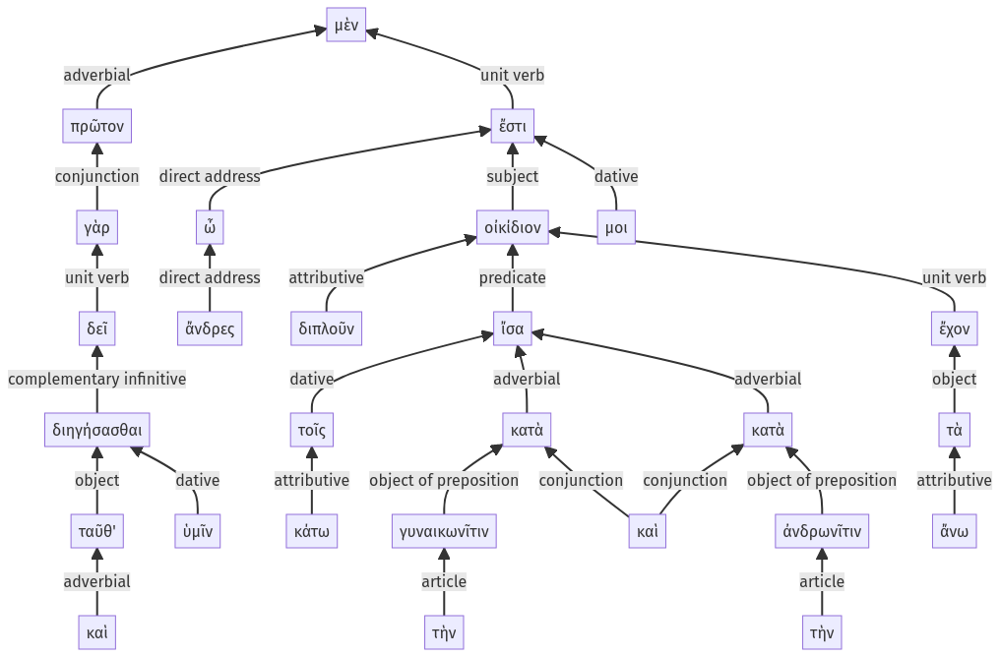

Lysias, Oration 1, 1.9.1-1.9.28a
1.8.16-1.8.29a | 1.9.29-1.9.38a
Sentence 17
1.9.1-1.9.28a
πρῶτον μὲν οὖν, ὦ ἄνδρες, (δεῖ γὰρ καὶ ταῦθ' ὑμῖν διηγήσασθαι) οἰκίδιον ἔστι μοι διπλοῦν, ἴσα ἔχον τὰ ἄνω τοῖς κάτω κατὰ τὴν γυναικωνῖτιν καὶ κατὰ τὴν ἀνδρωνῖτιν.
1 πρῶτον ὦ ἄνδρες
2 δεῖ γὰρ καὶ ταῦθ' ὑμῖν διηγήσασθαι
1 οἰκίδιον ἔστι μοι διπλοῦν
2 ἴσα ἔχον τὰ ἄνω τοῖς κάτω κατὰ τὴν γυναικωνῖτιν καὶ κατὰ τὴν ἀνδρωνῖτιν
πρῶτον μὲν οὖν, ὦ ἄνδρες, (δεῖ γὰρ καὶ ταῦθ' ὑμῖν διηγήσασθαι) οἰκίδιον ἔστι μοι διπλοῦν, ἴσα ἔχον τὰ ἄνω τοῖς κάτω κατὰ τὴν γυναικωνῖτιν καὶ κατὰ τὴν ἀνδρωνῖτιν.
Highlighting:
- connecting words
- unit verb
- subject
- object
Color code:
- independent clause (level 1, linking verb)
- circumstantial participle (level 2, transitive verb)
- aside (level 2, intransitive verb)
